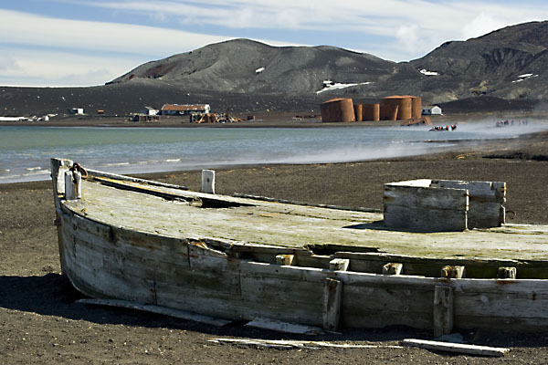
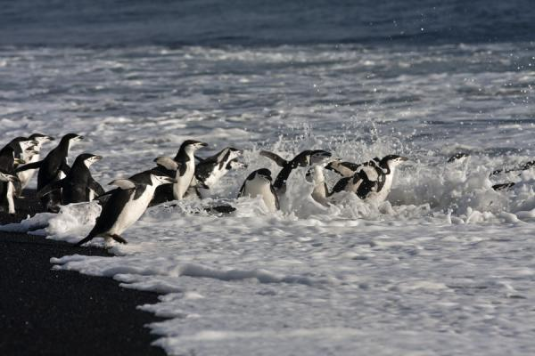

Isla Decepción
La isla Decepción pertenece al archipiélago de las Shetland del Sur, en la Antártida. Se sitúa al noroeste de la península Antártica en el estrecho de Bransfield.

Dominique: Es uno de los tres volcanes de la Antártida en donde se han observado erupciones, la última entre 1967 y 1970.
Caleta Balleneros o bahía Balleneros (en idioma inglés: Whalers Bay) es una pequeña caleta de la isla Decepción en las Shetland del Sur en la Antártida, encerrada entre la punta Fildes (o Balcarce) y la punta Penfold, que a principios del siglo XX fue ocupada por el capitán Adolfo Andresen y su tripulación para la instalación de una factoría ballenera, dependiente de la chilena Sociedad Ballenera de Magallanes constituyéndose en el primer establecimiento semipermanente en la Antártida, si se exceptúa a la base Orcadas que funciona de forma permanente desde 1903. En 1953 la bahía fue escenario de un incidente armado entre Argentina y el Reino Unido. Aquí se ubicó la Base B Isla Decepción del Reino Unido, actualmente inoperativa.
Caleta Péndulo es una pequeña ensenada ubicada en el sector noreste del Puerto Foster en la isla Decepción de las islas Shetland del Sur, Antártida.
Baily Head, traducción del inglés-Baily Head es un promontorio prominente, de 160 m de altura, que forma el extremo más oriental de la Isla Decepción, en las Islas Shetland del Sur de la Antártida.
